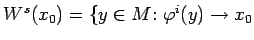
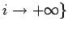
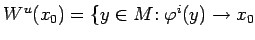
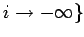

Inhalt Index DeskTop Bronstein

 Dynamische Systeme und Chaos Gewöhnliche Differentialgleichungen und Abbildungen Zeitdiskrete dynamische Systeme Invariante Mannigfaltigkeiten
Dynamische Systeme und Chaos Gewöhnliche Differentialgleichungen und Abbildungen Zeitdiskrete dynamische Systeme Invariante Mannigfaltigkeiten


Sei x0 eine Ruhelage von (17.3). Dann heißt  für  stabile Mannigfaltigkeit und  für  instabile Mannigfaltigkeit von  . Stabile und instabile Mannigfaltigkeiten heißen auch Separatrixflächen.
. Stabile und instabile Mannigfaltigkeiten heißen auch Separatrixflächen.